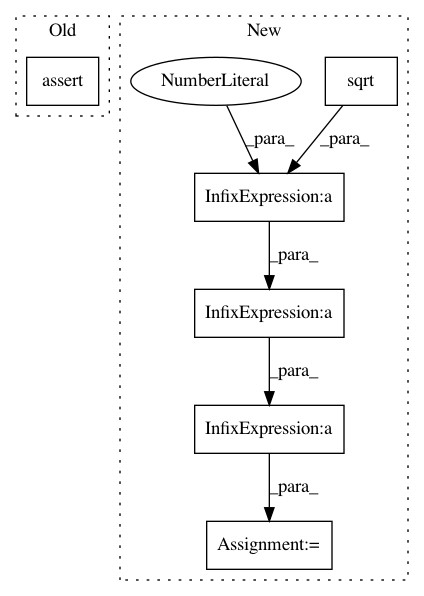

acedbe6cc807610d5495615dea662aac427a7ff5,tests/test_special_orthogonal_group.py,TestSpecialOrthogonalGroupMethods,test_matrix_and_tait_bryan_angles_xyz,#TestSpecialOrthogonalGroupMethods#,1022
Before Change
order=order)
expected = matrix
self.assertTrue(gs.allclose(result, expected),
" for {} Tait-Bryan angles with order {}\n"
"for point {}:\n"
" result = \n{};"
" expected = \n{}.".format(
extrinsic_or_intrinsic,
order,
angle_type,
result,
expected))
def test_matrix_and_tait_bryan_angles_zyx(self):
This tests that the composition of
After Change
order = "xyz"
for extrinsic_or_intrinsic in ("extrinsic", "intrinsic"):
point = gs.pi / (6 * gs.sqrt(3)) * gs.array([1., 1., 1.])
matrix = group.matrix_from_rotation_vector(point)
tait_bryan_angles = group.tait_bryan_angles_from_matrix(
matrix,
In pattern: SUPERPATTERN
Frequency: 3
Non-data size: 6
Instances
Project Name: geomstats/geomstats
Commit Name: acedbe6cc807610d5495615dea662aac427a7ff5
Time: 2018-07-29
Author: ninamio78@gmail.com
File Name: tests/test_special_orthogonal_group.py
Class Name: TestSpecialOrthogonalGroupMethods
Method Name: test_matrix_and_tait_bryan_angles_xyz
Project Name: google-research/google-research
Commit Name: 2a11d3f0bad2430b81628fa6cb0a6301d099d77d
Time: 2020-12-11
Author: xingyousong@google.com
File Name: performer/fast_attention/tensorflow/fast_attention_test.py
Class Name: TransformerLayersTest
Method Name: test_softmax_noncausal_attention_block_output
Project Name: geomstats/geomstats
Commit Name: acedbe6cc807610d5495615dea662aac427a7ff5
Time: 2018-07-29
Author: ninamio78@gmail.com
File Name: tests/test_special_orthogonal_group.py
Class Name: TestSpecialOrthogonalGroupMethods
Method Name: test_matrix_and_tait_bryan_angles_zyx